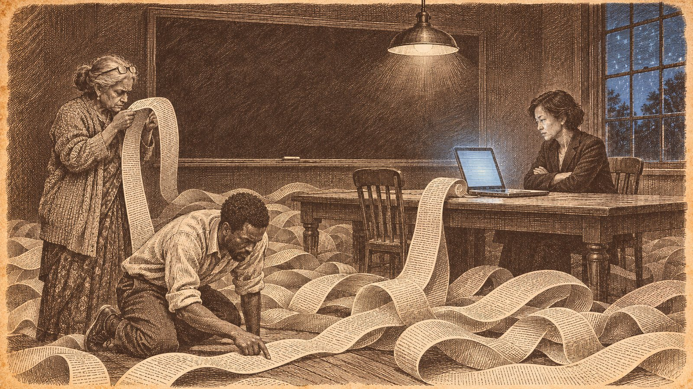

The proof nobody can read yet

On Friday 20 November, Levent Alpöge, a mathematician at Anthropic, posted a four-page note. It says he believes that he and Claude have proved the Riemann hypothesis, a question about prime numbers open since 1859.
The proof is not written for people. It is about 17 million lines of Lean, a language a computer checks line by line. A day later the Lean and Mathlib communities stated that both the proof and the statement it proves are correct. As of Sunday a few of the slower checks were still running.
No human-readable version exists. Alpöge writes that he does not fully command part of the mathematics himself and expects the argument to be simplified. The Clay Institute still lists the problem as unsolved: its rules ask for publication, two years and general acceptance.
The note appeared one day after Anthropic's stock-market debut. Alpöge called the timing "horrible".
Part of the mathematical community is angry, and some of that anger has a fair basis. A proof that nobody can follow tells you that something is true without telling you why.
An old complaint, and a new one.
The complaint is older than it sounds. In 1976 two mathematicians proved the four-colour theorem by having a computer check nearly two thousand cases. Colleagues said it was not a real proof because no person could verify it. It settled with time: a simpler proof came in 1994 and a full machine verification in 2005.
One thing is new. In 1976 the people had every idea and the machine did the checking. This time the machine supplied ideas. The old complaint was about taste. The new one asks what a mathematician is for, and there is no precedent for that.